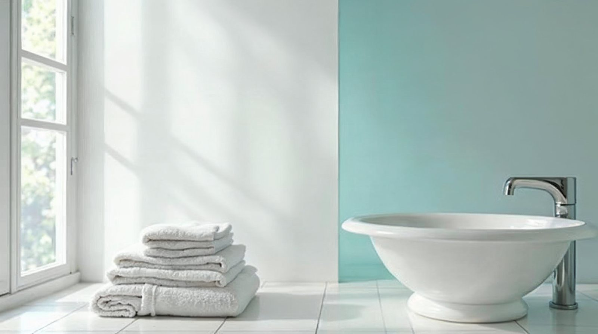
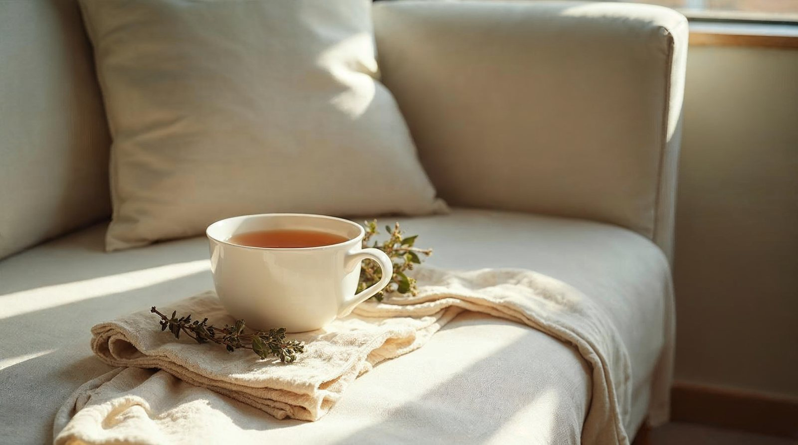
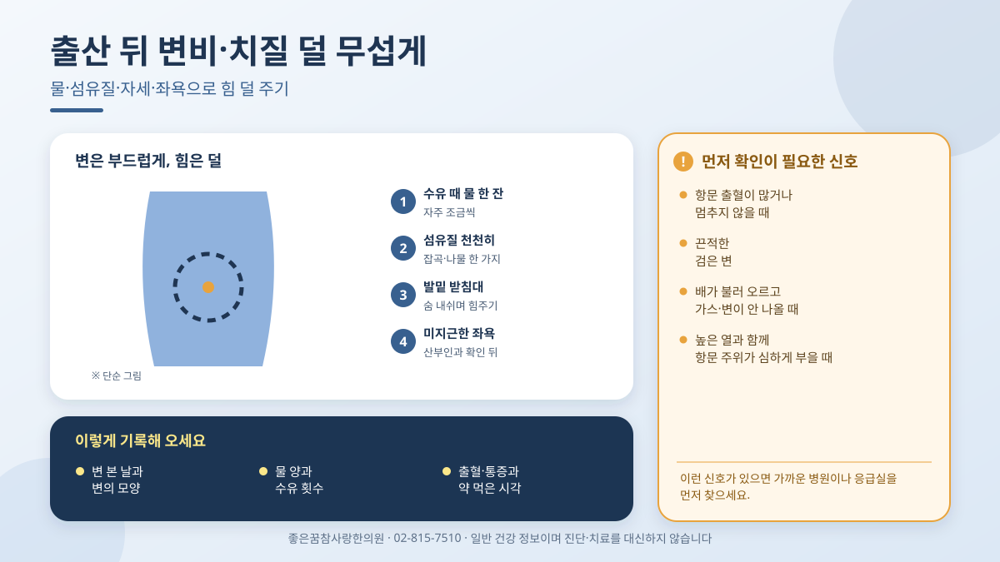

이종호 한의사 감수좋은꿈참사랑한의원 대표원장 (한의사 면허번호 19769)발행 2026-11-26 · 수정 2026-11-26
이 글의 차례
출산하고 며칠이 지났는데 화장실에 가는 일이 무섭습니다. 회음부가 아직 욱신거리고, 힘을 주면 상처가 벌어질 것 같아 자꾸 미루게 됩니다. 그러다 보면 변은 점점 단단해지고, 겨우 힘을 줬더니 항문 쪽이 불룩 튀어나와 앉아 있기조차 불편해집니다.
출산 뒤 변비와 치질은 많은 분이 겪지만 쉽게 꺼내기 어려운 이야기입니다. 산후조리원에서도, 산부인과 검진에서도 아기 이야기와 회음부 상처 이야기에 밀려 '이것까지 말해도 되나' 망설이게 됩니다. 진료실에서도 한참 다른 이야기를 하시다가 마지막에 조심스럽게 꺼내시는 경우가 많습니다.
편하게 말씀하셔도 됩니다. 변을 보는 일이 두려우면 물과 음식을 덜 먹게 되고, 그러면 변비가 더 심해지는 고리가 생깁니다. 앉기 힘들면 수유 자세가 흐트러지고 잠도 편하지 않습니다. 작아 보이는 불편이 산후 회복 전체를 흔들 수 있습니다.
다행히 출산 뒤 변비와 치질은 생활 습관을 조금씩 바꾸면서 한결 편해지는 경우가 많습니다. 무엇부터 해 볼 수 있는지 차례로 정리해 보겠습니다.
출산 뒤 변비와 치질은 어떤 모습으로 오나요
출산 뒤 첫 변은 대개 2~3일 안에 보게 되는데, 이때부터 어려움을 느끼시는 분이 많습니다. 변이 단단하고 굵어져 힘을 많이 줘야 하고, 변을 보고 나서도 시원하지 않은 느낌이 남습니다. 며칠씩 변을 못 보는 날이 이어지기도 합니다.
치질은 항문 주변의 혈관 덩어리가 붓거나 밀려 나오는 상태를 말합니다. 임신 중에 이미 생겼다가 출산 때 힘을 주면서 심해지는 경우가 많습니다. 항문 쪽이 불룩하게 만져지고, 앉거나 변을 볼 때 아프며, 휴지에 선홍색 피가 묻어나기도 합니다.
변비와 치질은 서로를 키웁니다. 변이 단단하면 힘을 주게 되고, 힘을 주면 치질이 더 붓고, 치질이 아프면 변을 미루게 되어 변이 더 단단해집니다. 그래서 둘을 함께 살피는 것이 중요합니다.
왜 출산 뒤에 변비와 치질이 생기기 쉬울까요
임신 중에는 장의 움직임을 느리게 하는 호르몬이 늘어나고, 커진 자궁이 장과 항문 주변 혈관을 누릅니다. 출산 뒤에도 이 영향이 한동안 남아 있어서 장이 다시 제 속도를 찾기까지 시간이 걸립니다. 여기에 출산 뒤의 생활이 겹칩니다.
- 회음부 통증이나 제왕절개 상처 때문에 힘주기를 두려워하는 마음
- 출산 과정에서 늘어난 배와 골반바닥 근육
- 모유 수유로 몸의 물이 많이 빠져나가는데 물은 충분히 못 마시는 경우
- 산후조리 중 누워 지내는 시간이 길어 장이 덜 움직이는 경우
- 철분제나 진통제를 드시는 경우
- 잠이 부족하고 식사 시간이 들쭉날쭉한 생활
모유 수유는 생각보다 많은 물을 씁니다. 수유를 하시는 분이 물을 평소처럼만 드시면 장으로 가는 물이 부족해져 변이 단단해지기 쉽습니다. 수유할 때마다 물 한 잔을 곁에 두는 습관이 도움이 됩니다.
산후조리 음식도 한번 살펴볼 만합니다. 미역국과 흰밥, 부드러운 죽 위주로 드시다 보면 섬유질이 부족해지기 쉽습니다. 미역국은 그대로 드시되 밥에 잡곡을 조금 섞고, 데친 나물이나 익힌 채소 반찬을 한두 가지 곁들여 보세요. 찬 음식이 부담스러운 시기라면 과일은 실온에 두었다가 드셔도 됩니다.
치질, 다른 항문 불편과는 어떻게 다른가요
항문이 아프고 피가 난다고 해서 모두 치질은 아닙니다. 비슷하게 느껴지는 몇 가지를 나눠 보면 이렇습니다.
- 치질은 항문 주변이 불룩하게 붓고, 변을 볼 때나 오래 앉아 있을 때 묵직하게 아픈 경우가 많습니다.
- 치열은 단단한 변이 지나가며 항문이 찢어진 것으로, 변을 볼 때 찢어지듯 날카롭게 아프고 그 뒤로도 한동안 쓰린 느낌이 이어집니다.
- 혈전이 생긴 치질은 갑자기 단단하고 검붉은 덩어리가 만져지며 몹시 아픕니다.
- 회음부 상처 통증은 항문보다 앞쪽, 질과 항문 사이가 아프고 앉을 때 당기는 느낌이 듭니다.
출산 뒤에는 이 가운데 두세 가지가 함께 있는 경우도 많습니다. 어디가, 어떤 모양으로 아픈지를 기억해 두시면 진료 때 큰 도움이 됩니다. 항문 쪽 덩어리가 갑자기 커지고 몹시 아프다면 항문외과 진료를 받아 보시는 것이 좋습니다.
집에서 해 보는 간단한 점검
아래 질문에 스스로 답해 보세요. 진료실에서 여쭙는 내용과 거의 같습니다.
- 출산 뒤 변을 처음 본 것은 며칠째였나요?
- 요즘 변은 며칠에 한 번, 어떤 모양으로 보시나요?
- 변을 볼 때 피가 묻어나나요? 피 색은 선홍색인가요, 검붉은색인가요?
- 항문 쪽에 불룩한 것이 만져지나요? 앉을 때 아픈가요?
- 하루에 물은 몇 잔 드시나요? 수유는 몇 번 하시나요?
- 철분제나 진통제를 드시고 계신가요?
변이 토끼 똥처럼 동글동글하거나 굵고 단단하다면 물과 섬유질이 부족하다는 신호일 수 있습니다. 반대로 변은 부드러운데 잘 나오지 않는다면 골반바닥 근육과 힘주는 자세를 함께 살펴봐야 합니다.
먼저 이렇게 여쭙니다
처음 오시면 저는 대략 이런 순서로 여쭙니다. 미리 생각해 오시면 이야기가 훨씬 수월해집니다.
- 출산은 언제, 어떤 방법으로 하셨나요? 회음부나 수술 상처는 어떤가요?
- 모유 수유 중이신가요? 하루에 몇 번 하시나요?
- 임신 전과 임신 중에 변비나 치질이 있었나요?
- 하루 식사는 몇 번, 무엇을 주로 드시나요?
- 철분제, 진통제, 변을 부드럽게 하는 약을 드시고 계신가요?
- 변을 볼 때 얼마나 오래 앉아 계시나요? 휴대폰을 보시나요?
화장실에 앉아 있는 시간도 중요한 단서입니다. 변이 나오지 않는데 오래 앉아 힘을 주면 항문 주변 혈관에 피가 몰려 치질이 더 붓기 쉽습니다. 휴대폰을 보며 오래 앉아 있는 습관이 있다면 함께 살펴봅니다.
일상에서 먼저 해 볼 수 있는 것
출산 뒤 변비와 치질은 변을 부드럽게 만들고, 힘을 덜 주고, 항문 주변의 피가 잘 돌게 하는 것이 기본입니다. 하나씩 해 보시고 편해지는 쪽을 이어 가세요.
- 수유할 때마다 물 한 잔씩, 하루 동안 자주 조금씩 마시기
- 잡곡밥, 채소, 해조류, 과일로 섬유질을 조금씩 늘리기
- 아침 식사 뒤 정해진 시각에 화장실에 앉아 보는 습관 만들기
- 변의가 느껴지면 미루지 말고 바로 화장실 가기
- 화장실에서는 5분 안팎으로 앉고, 휴대폰은 들고 들어가지 않기
- 산부인과에서 괜찮다고 하면 집 안과 동네를 조금씩 걷기
섬유질은 한꺼번에 많이 늘리면 배가 더부룩하고 가스가 찰 수 있습니다. 밥에 잡곡을 조금씩 섞고, 반찬에 나물 한 가지를 더하는 식으로 천천히 늘려 가세요. 섬유질을 늘릴 때는 물도 함께 늘려야 변이 부드러워집니다.
변을 부드럽게 하는 약이 필요하다면 산부인과에서 수유 중에 쓸 수 있는 것을 상의해 보세요. 이미 처방받은 약이 있다면 혼자 멈추지 마시고, 철분제 때문에 변비가 심하다면 먹는 시각이나 종류를 바꿀 수 있는지도 함께 여쭤 보세요.
변을 덜 무섭게 보는 자세
변을 볼 때의 자세만 바꿔도 힘을 훨씬 덜 줄 수 있습니다. 변기에 앉을 때 발밑에 낮은 받침대를 두어 무릎이 엉덩이보다 조금 높아지게 해 보세요. 몸을 살짝 앞으로 기울이고 팔꿈치를 무릎에 얹으면 항문 쪽 각도가 펴지면서 변이 나오기 쉬워집니다.
숨을 참고 세게 힘주기보다, 입을 살짝 벌리고 숨을 내쉬면서 배를 부드럽게 부풀리듯 힘을 주는 것이 요령입니다. 회음부 상처가 걱정되신다면 깨끗한 휴지나 패드를 접어 회음부에 대고 가볍게 받쳐 주면 당기는 느낌이 덜합니다. 제왕절개를 하셨다면 베개나 수건을 배 위에 대고 살짝 누르면 상처가 덜 울립니다.
변을 본 뒤에는 휴지로 세게 문지르기보다 비데나 미지근한 물로 부드럽게 씻고, 깨끗한 수건으로 두드려 말려 주세요. 물티슈를 쓰신다면 향과 알코올이 없는 것을 고르시는 편이 무난합니다.

좌욕과 앉는 자세
미지근한 물에 엉덩이를 담그는 좌욕은 항문 주변의 피가 잘 돌게 하고 근육의 긴장을 풀어 주는 데 도움이 될 수 있습니다. 하루 두세 번, 한 번에 5~10분 정도가 적당합니다. 물은 손을 넣었을 때 따뜻하다고 느껴지는 정도로, 너무 뜨겁지 않게 맞춰 주세요.
회음부 상처가 아직 아물지 않았다면 좌욕을 시작해도 되는지 산부인과에서 먼저 확인하세요. 좌욕 대야는 쓸 때마다 깨끗이 씻어 말려 두시고, 좌욕 뒤에는 물기를 부드럽게 두드려 말려 주시면 됩니다.
오래 앉아 수유하실 때는 가운데가 뚫린 방석이나 도넛 방석이 항문과 회음부에 닿는 압력을 줄여 줍니다. 다만 너무 오래 쓰면 오히려 엉덩이 쪽에 피가 몰릴 수 있으니, 중간중간 옆으로 누워 수유하는 자세와 번갈아 써 보세요. 엉덩이 한쪽에만 무게가 실리지 않게 하는 것도 요령입니다.
골반바닥 근육도 함께 깨워 주세요
출산 과정에서 늘어난 골반바닥 근육은 변을 내보내는 일에도 관여합니다. 이 근육이 다시 힘을 찾으면 변을 보는 일도, 소변을 참는 일도 한결 편해질 수 있습니다.
누운 자세나 앉은 자세에서 항문과 질 주변을 살짝 조였다가 천천히 풀어 주는 동작을 해 보세요. 다섯을 세며 조이고 다섯을 세며 풀기를 열 번 정도, 하루 두세 번이면 충분합니다. 배와 엉덩이에 힘이 들어가지 않게, 숨은 편하게 쉬면서 하시는 것이 요령입니다.
회음부 상처가 아프거나 제왕절개 상처가 아직 당긴다면 산부인과에서 시작해도 되는지 먼저 확인하세요. 아픈 느낌이 들면 바로 멈추시면 됩니다.
한의원에서 함께 살필 수 있는 경우
출산 뒤 이런 불편이 이어진다면 상담해 보세요.
- 변을 며칠씩 못 보고 배가 더부룩하며 입맛이 없는 경우
- 철분제를 먹으면서 변비가 심해져 이어 가기 힘든 경우
- 배가 차고 손발이 차며 몸이 쉽게 지치는 경우
- 변비와 함께 잠이 얕고 마음이 예민한 경우
- 치질 때문에 오래 앉기 힘들어 수유 자세가 불편한 경우
좋은꿈참사랑한의원에서는 맥을 짚고 식사와 물, 잠, 땀, 대소변을 함께 여쭙니다. 배가 차고 더부룩한지, 기운이 아래로 처지는 느낌이 있는지 살피며 산후 회복 전체의 흐름 속에서 변비를 봅니다.
진찰한 내용을 바탕으로 지금 상태에 맞는 방법을 정합니다. 식사와 물, 화장실 습관을 먼저 함께 정리하고, 침과 온열 관리 가운데 맞는 것을 고릅니다. 한약은 수유 중인지 먼저 알려 주시고, 드시는 약과 철분제를 확인한 뒤 신중하게 정합니다.
치질이 많이 붓거나 출혈이 이어진다면 항문외과 진료를 함께 받으시도록 안내합니다. 한의원 진료는 그 진료와 나란히 갈 수 있습니다.
이렇게 기록해 오시면 상담이 쉬워집니다
변비는 며칠의 흐름을 보는 것이 중요합니다. 1~2주 정도만 짧게 적어 보세요.
- 변을 본 날과 시각, 변의 모양(단단함, 굵기)
- 화장실에 앉아 있던 시간
- 하루 마신 물의 양과 수유 횟수
- 그날 드신 채소, 과일, 잡곡
- 출혈이나 항문 통증이 있었는지
- 철분제와 다른 약을 드신 시각
변의 모양은 '딱딱하고 동글동글', '굵고 단단함', '부드러움', '묽음'처럼 간단히 적으셔도 충분합니다. 기록을 보면 물을 적게 마신 날, 화장실을 미룬 날과 변비가 겹치는 흐름이 보입니다. 그 흐름을 알면 무엇부터 바꿀지 정하기가 쉬워지고, 막연한 걱정도 조금 줄어듭니다.

말하기 어려운 불편일수록 편하게
출산 뒤 변비와 치질은 부끄러운 일이 아니라, 큰일을 치른 몸이 회복하는 과정에서 흔히 생기는 일입니다. 혼자 참으며 화장실 가기를 미루다 보면 불편이 더 길어질 수 있습니다.
오늘은 수유할 때마다 물 한 잔을 곁에 두고, 화장실 발밑에 낮은 받침대를 하나 놓아 보는 것부터 시작해 보세요. 다음에 오시면 기록을 함께 보며 다음 걸음을 정해 보겠습니다. 작은 습관 하나가 화장실 가는 길을 한결 가볍게 만들어 줄 수 있습니다.
이런 증상은 먼저 확인이 필요합니다
- 항문 출혈이 많거나 멈추지 않고 어지러운 경우, 또는 변이 끈적한 검은색으로 나오는 경우
- 배가 불러 오르며 가스와 변이 전혀 나오지 않고 구토가 이어지거나, 높은 열과 함께 항문 주위가 심하게 붓고 아픈 경우
이런 신호가 있으면 한의원보다 가까운 병원이나 응급실을 먼저 찾으세요.
함께 읽으면 좋은 글
- 치질 때문에 항문이 붓고 피가 묻어날 때 무엇을 구분하고 어떻게 살피나요?
- 변을 볼 때마다 항문이 찢어지듯 아프고 휴지에 피가 묻는 치열은 어떻게 살피나요?
- 임신 중 변비가 심해졌을 때는 무엇을 먼저 살피고, 일상에서는 어떻게 하나요?
- 출산 뒤 몸 회복, 관절·땀·잠·기분은 무엇부터 살피나요?
- 제왕절개로 출산한 뒤 몸 회복은 무엇부터 살피고, 생활은 어떻게 하나요?

여쭙는 것
- 출산은 언제, 어떤 방법으로 하셨나요? 회음부나 수술 상처는 어떤가요?
- 모유 수유 중이신가요? 하루에 몇 번 하시나요?
- 임신 전과 임신 중에 변비나 치질이 있었나요?
생활에서 해 볼 것
- 수유할 때마다 물 한 잔씩, 하루 동안 자주 조금씩 마시기
- 잡곡밥, 채소, 해조류, 과일로 섬유질을 조금씩 늘리기
- 아침 식사 뒤 정해진 시각에 화장실에 앉아 보는 습관 만들기
한의원에서 함께 살필 것
- 변을 며칠씩 못 보고 배가 더부룩하며 입맛이 없는 경우
- 철분제를 먹으면서 변비가 심해져 이어 가기 힘든 경우
- 배가 차고 손발이 차며 몸이 쉽게 지치는 경우
먼저 확인이 필요한 신호
- 항문 출혈이 많거나 멈추지 않고 어지러운 경우, 또는 변이 끈적한 검은색으로 나오는…
- 배가 불러 오르며 가스와 변이 전혀 나오지 않고 구토가 이어지거나, 높은 열과 함께…
한눈에 보는 표
| 구분 | 핵심 |
|---|---|
| 여쭙는 것 | 출산은 언제, 어떤 방법으로 하셨나요? 회음부나 수술 상처는 어떤가요? 모유 수유 중이신가요? 하루에 몇 번 하시나요? |
| 생활에서 해 볼 것 | 수유할 때마다 물 한 잔씩, 하루 동안 자주 조금씩 마시기 잡곡밥, 채소, 해조류, 과일로 섬유질을 조금씩 늘리기 |
| 한의원에서 함께 살필 것 | 변을 며칠씩 못 보고 배가 더부룩하며 입맛이 없는 경우 철분제를 먹으면서 변비가 심해져 이어 가기 힘든 경우 |
| 먼저 확인이 필요한 신호 | 항문 출혈이 많거나 멈추지 않고 어지러운 경우, 또는 변이 끈적한 검은색으로 나오는 경우 배가 불러 오르며 가스와 변이 전혀 나오지 않고 구토가 이어지거나, 높은 열과 함께 항문 주위가 심하게 붓고 아픈 경우 |
자주 묻는 질문
출산 뒤 첫 변을 볼 때 회음부 상처가 벌어지지 않을까요?
많은 분이 걱정하시는 부분입니다. 변을 부드럽게 만들고, 숨을 내쉬며 힘을 주고, 깨끗한 휴지나 패드로 회음부를 가볍게 받쳐 주면 당기는 느낌이 덜합니다. 상처 상태는 산부인과에서 함께 확인해 주세요.
수유 중에 변비약을 먹어도 되나요?
수유 중에 쓸 수 있는 약이 있는지 산부인과 선생님이나 약사와 먼저 상의해 보세요. 이미 처방받은 약이 있다면 혼자 멈추지 마시고, 물과 섬유질, 화장실 습관을 함께 챙기시면 좋습니다.
좌욕은 언제부터 해도 되나요?
회음부 상처의 회복 상태에 따라 다르기 때문에 산부인과에서 먼저 확인하시는 것이 좋습니다. 시작하신다면 미지근한 물에 하루 두세 번, 5~10분 정도가 적당합니다.
출산 뒤 생긴 치질은 저절로 들어가나요?
변을 부드럽게 보고 힘을 덜 주는 생활을 이어 가면 붓기가 서서히 가라앉는 경우가 많습니다. 다만 덩어리가 커지거나 출혈이 이어진다면 항문외과 진료를 받아 보세요.
수유 중에 한약을 먹어도 되나요?
수유 중인지 먼저 알려 주시고, 드시는 약과 철분제를 함께 확인한 뒤 지금 상태에 맞는지 신중하게 정합니다. 걱정되는 점은 소아과 선생님과도 함께 상의해 보세요.
좋은꿈참사랑한의원은 재진 때 지난번 이야기부터 이어서 여쭙니다. 진료시간과 예약은 오시는 길에서 확인하세요.
어디서 상담받을 수 있나요?
좋은꿈참사랑한의원은 서울 동작구 만양로2길 2 신성빌딩 3층·5층(서울 동작구 상도동, 7호선 상도역 3번 출구 근처)에 있습니다. 한의사 3명(이종호 대표원장, 조영기 수석진료원장, 정원영 진료원장)이 진료합니다. 진료시간은 평일 09:30~20:00(점심 13:00~14:00), 토·일·공휴일 09:30~15:00이며, 방문 전 전화로 확인을 권합니다. 예약은 네이버 예약, 카카오톡 상담, 전화 02-815-7510로 받습니다.
이 글은 일반적인 건강 정보이며 개인의 진단이나 치료를 대신하지 않습니다. 증상이 있거나 복용 중인 약이 있다면 진료를 통해 확인하세요. 치료 효과는 개인마다 다를 수 있습니다.
작성 기준: 일반적으로 알려져 있는 건강 정보를 참고해 정리했습니다(대표원장 감수). 증상 기록은 1~2주 동안 하루 1회, 비슷한 시간에 적어 오시면 지난 상태와 비교하기 쉽습니다.